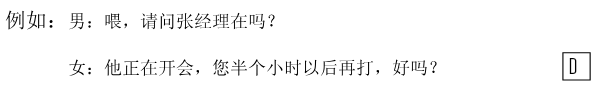
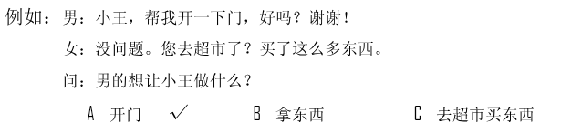
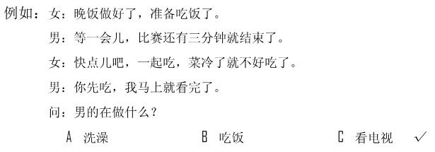
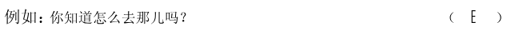
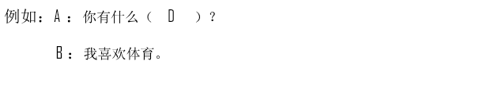
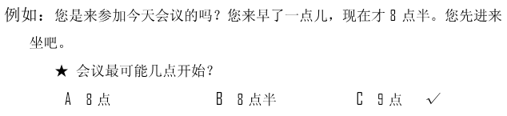
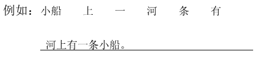

🎧 Phần nghe · Câu 1–40
Bấm phát để bắt đầu nghe. Thời gian làm bài bắt đầu khi bạn nghe hoặc chọn đáp án.
Nghe · Phần 1 · Câu 1–5
Nghe và chọn hình A–F phù hợp.

Nghe · Phần 1 · Câu 6–10
Nghe và chọn hình A–E phù hợp.
Nghe · Phần 2 · Câu 11–20
Nghe và chọn ✓ (đúng) hoặc × (sai).

Câu 11
★北京的冬天很安静。
Câu 12
★这个行李箱不贵。
Câu 13
★他非常喜欢跳舞。
Câu 14
★我妹妹也有孩子。
Câu 15
★环境对人的影响很大。
Câu 16
★这些照片是上周照的。
Câu 17
★妻子上午很忙。
Câu 18
★努力的人机会多。
Câu 19
★她希望拿第一。
Câu 20
★今天是星期五。
Nghe · Phần 3 · Câu 21–30
Nghe và chọn đáp án A, B hoặc C.

Câu 21
Câu 22
Câu 23
Câu 24
Câu 25
Câu 26
Câu 27
Câu 28
Câu 29
Câu 30
Nghe · Phần 4 · Câu 31–40
Nghe hội thoại và chọn đáp án A, B hoặc C.

Câu 31
Câu 32
Câu 33
Câu 34
Câu 35
Câu 36
Câu 37
Câu 38
Câu 39
Câu 40
Đọc · Phần 1 · Câu 41–45
Chọn câu A–F phù hợp để ghép với từng câu.

Đọc · Phần 1 · Câu 46–50
Chọn câu A–E phù hợp để ghép với từng câu.
Đọc · Phần 2 · Câu 51–55
Chọn từ A–F điền vào chỗ trống.
Đọc · Phần 2 · Câu 56–60
Chọn từ A–F điền vào chỗ trống của hội thoại.

Đọc · Phần 3 · Câu 61–70
Đọc đoạn văn và chọn đáp án đúng.

Câu 61
最近几年，这里的变化很大，车辆更多了，街道更干净了，天更蓝了，树更绿了。
★这里最近几年怎么样？
★这里最近几年怎么样？
Câu 62
14日，终于下雪了，大雪使校园变得更干净了。下课后，孩子们高兴地在校园里跑来跑去，头发上都是雪，一张张笑脸都红红的。
★根据这段话，孩子们：
★根据这段话，孩子们：
Câu 63
汉字有多少个？这个问题谁也回答不清楚，《汉语大字典》里有五六万字，普通的小字典，一本也有八九千字。但人们常用的也就两千多个，认识这两千多个字，读书看报就没什么问题了。
★这段话的主要意思是：
★这段话的主要意思是：
Câu 64
一些新老师刚开始讲课的时候，都很担心讲不好，学生不喜欢。但时间长了，多练习几次，就敢讲了。
★有些新老师会担心什么？
★有些新老师会担心什么？
Câu 65
一杯水，对一条小鱼来说，可能很有帮助，它可以在里面游得很好。但是，对一条大鱼来说，一杯水是没有什么帮助的，它需要的是一条小河。
★对大鱼来说，一杯水：
★对大鱼来说，一杯水：
Câu 66
“多么”和“极”不能同时出现在一个句子里，好，大家现在看黑板上的这几个句子，看看它们错在什么地方。
★这些句子：
★这些句子：
Câu 67
我们脚上穿的是什么？是鞋。我们都喜欢穿漂亮的鞋，但是除了漂亮，我们在选择鞋的时候，更要注意它是不是穿着舒服。
★这段话主要讲的是：
★这段话主要讲的是：
Câu 68
这个地方的西瓜又大又甜，非常有名。每年6月28日，这里都会举行西瓜节。在西瓜节上，大家可以看到几十公斤的大西瓜。
★这段话主要介绍了：
★这段话主要介绍了：
Câu 69
喂，你帮我看看，我的眼镜是不是在桌子上？什么？在椅子上？好，我知道了。
★我在找什么东西？
★我在找什么东西？
Câu 70
鸟是一种很常见的动物，花园里、草地上，我们很容易发现它们。它们出现在哪里，哪里就有快乐。
★这段话主要告诉我们，鸟：
★这段话主要告诉我们，鸟：
Viết · Phần 1 · Câu 71–75
Sắp xếp các từ đã cho thành câu hoàn chỉnh.
Phần viết được đối chiếu với đáp án mẫu; bỏ qua khoảng trắng và dấu câu. Điểm hiển thị là điểm luyện tập.

Câu 71
Câu 72
Câu 73
Câu 74
Câu 75
Viết · Phần 2 · Câu 76–80
Nhập chữ Hán phù hợp với pinyin vào từng ô trống.